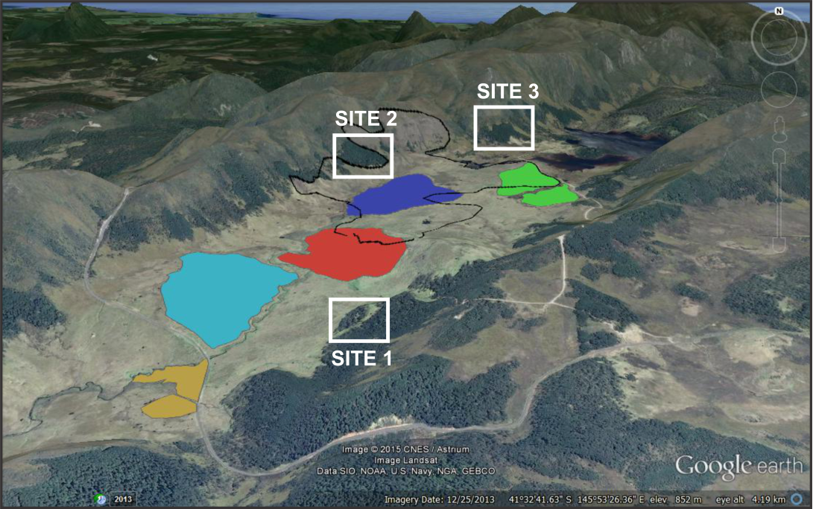
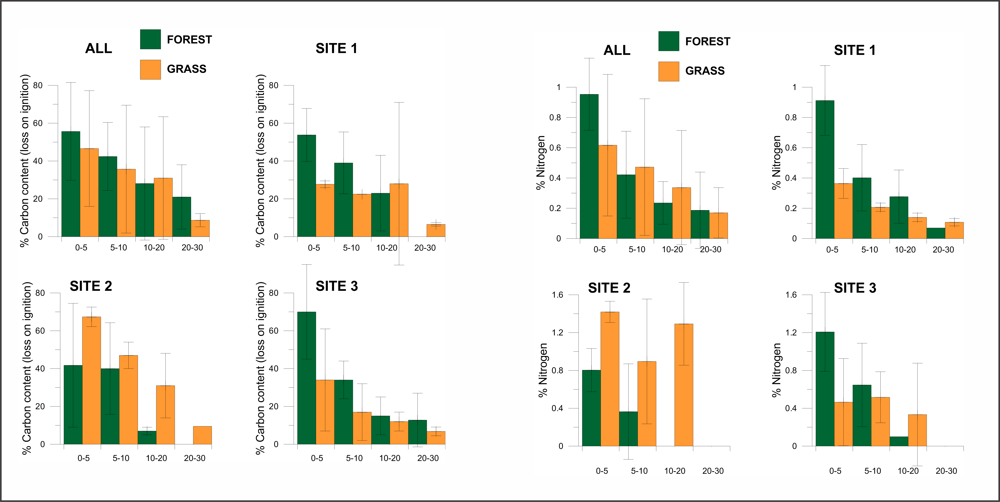
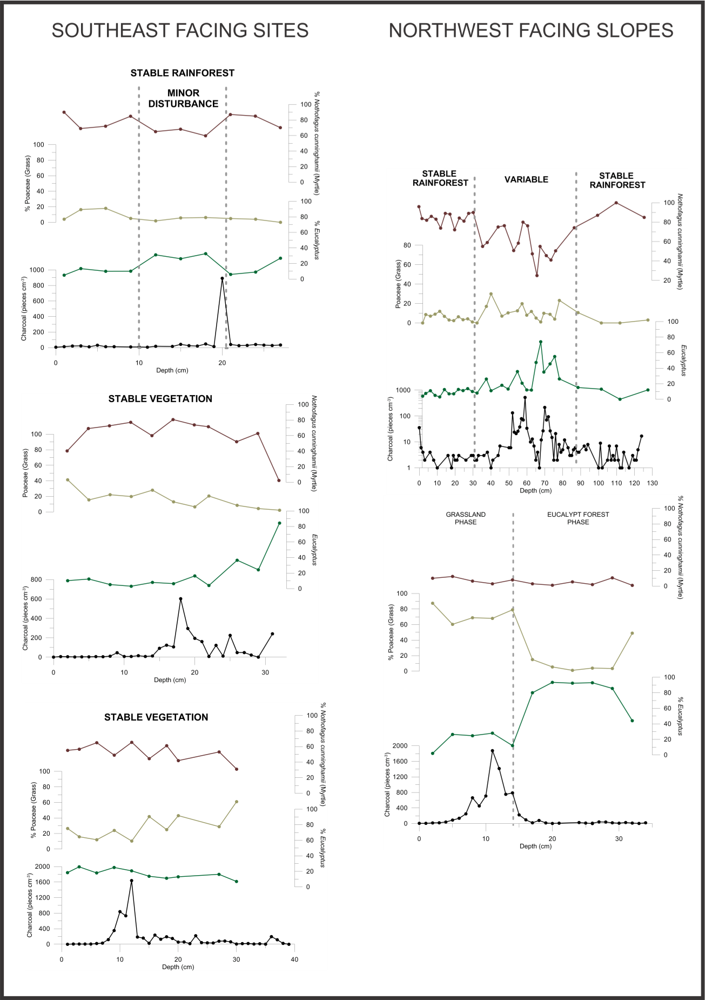

Map of the Vale of Belvoir, northwest Tasmania, Australia, showing the location of the study sites, the spatial extent of fire events since 1983 and the topography of the local area.
(image source: Google Earth; fire map prepares by M. Mariani)

fire events around 1850s
In the 1820s and 1830s, people were pushed into the forested areas to search for the land that is suitable for farming since lots of the Tasmania’s grasslands and open woodlands were taken up for pastoral development.
In the late 1850s, under the Waste Land Acts, more forested area are available for settlement
In the summer of

1850-51, northern Tasmania experienced a major bushfire catastrophe (known as the Black Thursday).
a number of bushfires were reported during the hot dry summer of 1853
Dendro

Results of the dendrochronology of the Vale of Belvoir. Data from each site is located on the left, while all data are presented on the right.
Nutrients

Results of the Carbon and Nitrogen analysis of the Vale of Belvoir.
According to the Jackson Alternative Stable States (Wood & Bowman 2011), lower flammability leads to less frequent fires and it causes the accumulation in soil nutrients.
The damp environment and the low flammability at site 2 might be one reasonable explanation for containing a massive amount of nutrients.
taking a broad view of
the whole vale data, there is no distinct difference of Carbon and Nitrogen content between grassland and forest. Therefore, the soil nutrient is probability not a
determinant factor for the grassland-forest distribution and it is not capable to tell the fluctuation of the forest-grassland boundary.
Charcol

Pollen and charcoal data from the Vale of Belvoir split in to sites facing southeast and sites facing northwest.
Group Shot